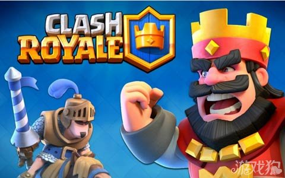

Clash Royale核心机制分析 创中核游戏新规则
尽管在过去四年里游戏玩法出现了一定的变化，但是中核游戏循环仍然保持不变：创建一个基地，培养一支军队，与其他玩家战斗去攀上排行榜顶端。好几年来我们都将这一循环视为默认循环，并且在这一过程中不断让玩家去创建并培训各种军队。而随着《Clash Royale》的诞生，Supercell不只是在亲手粉碎自己所创造的中核游戏基准，同时也在为未来的中核游戏创造一套全新的规则。
《Royale》遵循了Supercell简单的获胜公式：
第一步便是创造一款让人熟悉的新游戏。以《Royale》为例，它便结合了《部落战争》和《炉石传说》。在我看来这与MOBA毫不相关，但却是简化版的战斗AI。 第二步便是保持功能足够简单。许多公司在发行游戏时都追求“功能对等”。但我认为这是一种错误的想法，因为你只能在拥有玩家行为数据时才能创造出优秀的最终游戏功能。 第三步，同时也是最后一步便是专注于游戏优化。只有平衡的经济，华丽的图像以及较少的漏洞才能创造出一款高质量的游戏。 当《Royale》开始在加拿大软发行时，世界各地的开发者便开始安装它并沉浸于游戏的乐趣中。但很快地这种乐趣便会被沮丧所取代，因为我们会发现Supercell完全改变了游戏规则。而《Royale》也将是Supercell第4款吸引市场注意的游戏，并且它也会让其余的游戏开发者瞬间暗淡下去。
核心循环
Royale》的核心循环主要包括两部分：战斗和创造并升级桥牌的元游戏。推动游戏循环的游戏核心循环包含了四个关键元素。第一个关键元素便是同步的玩家对抗玩家战斗。玩家赢得一次战斗能够获得Trophies，输掉战斗则会失去Trophies。当玩家开启全新Arena时他们便会期待能够获得Trophies，并且在这里他们能够获得更棒的奖励。总之Arena是一个联盟层。 我们必须注意的是，在这款游戏中战斗并不会消耗资源。这一改变是出现在游戏软发行阶段，即在一开始玩家必须为每次战斗花费Gold。因为战斗的成本是免费的，所以玩家可以玩好几个小时的战斗。比起其它基于创建和战斗的中核游戏，这可以算是非常大的改变的，它是通过训练军队的成本和时间去限制战斗的乐趣。 除了帮助玩家在联盟中的爬升，Trophies也能够用于比赛安排。需要注意的是，与经典的创建和战斗游戏不同的是，在《Royale》中比赛并不能奖励玩家任何货币。相反地，获得胜利能够让玩家收到新纸牌。这也将推动玩家去获取更多Trophies并最终与更强大的敌人进行对抗。不提供给获胜玩家货币奖励是在《部落战争》基础上的一大完善，因为在《部落战争》中玩家会故意失去Trophies而与较弱的对手战斗去获取更多资源。 与其它创建和战斗游戏不同的是，这里没有推动玩家去掉落排行榜只为与较弱的对手对抗的动机。 在每次战斗胜利后，玩家还会收到除Trophies之外的Treasure Chest。特定的Chest内容是取决于Chest类型以及完成当前的Arena关卡的随机掉落战利品。玩家每次只能打开一个Chest并且最多只能拥有四个Chest。因为玩家能够拥有Chest非常有限，所以玩家有时候并不能拥有他们通过战斗所获得的所有Chest。这也将引出核心循环中的等待/盈利部分，即玩家可以使用付费货币Gem跳过这一部分。也就是如果你拥有Gem，你便能够打开更多Chest。 一旦开启Chest的计时器结束，玩家便会接到回归游戏的通知。回到游戏开启Treasure Chest能够保证玩家积极的回归频率，并能够提供给他们在几个小时前所进行的战斗的奖励。Treasure Chest是游戏进程的必要元素，因为它能够奖励玩家纸牌，Gold以及随机数量的Gem等战利品。 游戏将根据玩家所拥有的Trophies对其进行排名，但这却不是一种进程测量方式。相反地是玩家级别在划分着游戏进程。玩家升级需要XP，而获得XP的唯一方法便是升级纸牌。 在《Royale》中升级纸牌是与纸牌收集游戏类似的一种简单的升级机制。首先玩家必须通过Chest找到一张新纸牌。这将带给玩家第一个纸牌级别。随着玩家收到更多相同的纸牌，他便能够通过消耗所有所需纸牌去升级纸牌。纸牌级别越高，玩家便能够获得更多所需要的纸牌和Gold去进行升级。玩家在此没有其它选择，只能升级纸牌，而这么做不仅能够提高纸牌的性能同时也能提供给他们更多XP，所以这是一种必要的升级。玩家的级别很重要，因为它能够提高玩家塔防的生命值并让它们在战斗中变得更加强大。
战斗
《Clash Royale》中简短且快节奏的同步玩家对抗玩家战斗具有非常强大的吸引力。首先玩家只需几秒钟便能打开应用，安排比赛并开始战斗。其次，因为玩家间不对称的信息所创造的期待感，游戏中的战斗不仅玩起来有趣看起来也很有趣。 在战斗中，玩家都会基于他们所选择的桥牌去执行自己想要执行的策略。观察者既能看到游戏板也能看到其他玩家手上的内容，但是他们却不会知道其他玩家心里想着什么。非对称信息与观察者所看到的每个玩家手上的纸牌间的结合便是电子竞技和扑克的魅力所在。
比赛场所和规则
《Clash Royale》中的战场包含两条道，两个塔防和一个核心基地塔防。在这里获胜的条件很简单：最简单的获胜方式便是在比赛最后拥有更多Crowns。每场比赛都拥有一个三分钟计时器，并且也有可能出现延时一分钟的情况。所以玩家需要在时间结束前收集更多Crown。玩家每摧毁一个塔防便能够从中获得一个Crown。而获胜的第二种方法便是“击倒”，即摧毁游戏的中心塔防。一旦玩家摧毁了中心塔防，他们便能获得三个Crown做为奖励，当然也有来自观看比赛的人的击掌。 在战斗的前两分钟玩家每两秒便将获得一个Elixir点数，并最多将获得10个点数。在前2分钟后，战斗模式势头将从基于回合的战术攻击与防卫转变成全面冲突，即在剩下的比赛时间里Elixir的生成速度将翻倍。Elixir将消耗玩家的纸牌。玩家放置纸牌的确切位置将影响到他们的防卫结果。玩家每次最多只能持有4张纸牌。而使用一张纸牌能够带给玩家下一张纸牌。玩家必须将单位和建筑放置在有限的游戏区域，并且他们可以在任何地方使用咒语。
策略与精通
在《Royale》中赢得战斗既需要有关元游戏的策略也需要精通游戏玩法。创造桥牌需要策略。玩家必须确保能够控制桥牌的平均成本以及不同纸牌的合理分配。而在战斗中为了在合适的时间和位置上使用适当的纸牌，玩家就必须精通游戏玩法。 《Clash Royale》中单位的功能与《部落战争》中的单位很像：玩家将在一个比赛场所投下一张单位纸牌，这将启动部署计时器(游戏邦注：不过《部落战争》并没有部署计时器)。一旦部署计时器停止了，玩家所放置的单位便会朝着敌人的塔防移动。基于不同单位它将瞄准建筑或最靠近的目标。有些单位也会瞄准空降部队。简单的双车道占地能够缓解所有有关道路的问题。即有可能你的单位攻击的是一些毫无意义的东西(如一堵墙)并因此遭到来自它们身边的防御性塔防的攻击。 为了获得战斗的胜利，时机和精确的纸牌放置非常重要。 在《Royale》中，攻击是需要经过衡量与计算的。举个例子来说吧：首先玩家需要投下一个拥有足够生命的坦克单位去承受来自防御塔防的伤害。很快地该坦克单位将靠近敌人塔防，敌人有可能会投下单位去抵御它。这时候你便能够使用像Arrows或Fireballs等破坏性咒语去攻击对方。还有一个选择便是在坦克后面投下远程单位并在防卫者从前面攻击坦克单位时将其弹开。但作为一个攻击者你肯定不希望太快投下所有单位，因为它们可能将面对来自敌人破坏性咒语的攻击。 在《Royale》中防卫型玩家将拥有优势。首先，防卫型玩家拥有塔防，它能够射击所有攻击单位。最重要的是，攻击者必须先揭开自己的纸牌，如此防卫者便能够反击这些纸牌。如果防卫者在防卫单位上消耗较少的Elixir，他便拥有反击的优势。同样地，如果防卫者能够无需损失防卫单位而摧毁攻击对象的话，他便能够使用现有的防卫者自动发起反击。 在《Clash Royale》中攻击型玩家经常处于有利位置。 尽管很有趣，很平衡且让人上瘾，但《Royale》中的战斗还是不够完美。在我看来一个很明显的问题便是防卫者拥有过于强大的优势。例如当战斗开始时，双方玩家都很难去投放纸牌。因为在不了解敌人手上有什么的时候消耗Elixir太过冒险，毕竟Elixir的生成速度是固定的。 我希望Supercell能够在之后的游戏更新中解决这一问题。而一种可行的解决方法便是添加更多便宜的Elixir单位，即玩家最初攻击可以投放的单位，并且无需在攻击上消耗太多Elixir。还有一种选择便是遵循《炉石传说》或《高级战争》模式，即玩家可以从自己的桥牌或军队中选择一个英雄角色。例如选择Barbarian King作为英雄角色将能推动地面混战单位的生成。着眼于敌人的英雄单位也能够缩减敌人手上可能拥有的纸牌类型，并让玩家在比赛开始时做出更加谨慎的攻击。
元游戏
《Royale》的元游戏是关于创建一个包含8张纸牌的平衡桥牌。比起只专注于特定强大纸牌，玩家需要基于协同作用去创造自己的桥牌。这一目标便是让每一张纸牌都能够相互协作并创造最完美的攻击，防御和反击。桥牌建造之所以有趣是因为所有纸牌都是有效平衡的，既能够保证你所面对的每个敌人手上都拥有不同的内容。创造桥牌的元游戏也并非静态的。让玩家获得Trophies并在比赛场地中移动时，他们将打开随手在桥牌中使用的纸牌以及其它新纸牌。 玩家必须摧毁敌人的塔防才能赢得战斗。为了实现这一目标玩家必须拥有两种类型的摧毁纸牌。第一种便是一次只能摧毁一个单位或一个建筑的直接型摧毁纸牌。这些纸牌拥有每秒最高的杀伤力，它们能够有效对抗塔防和坦克单位。第二种便是溅射伤害纸牌，即能够同时面对多个目标。这些纸牌每秒所造成的伤害较低，因为它们能够同时瞄准多个单位。所以它们主要针对一群命中点较低的单位。 成功的关键便是找到你的桥牌中不同纸牌间的协同作用。 除了拥有直接伤害纸牌和溅射伤害纸牌间的平衡外，玩家同时还必须平衡混战单位和远程单位间的平衡。远程单位可以击倒地面和空中目标，即它们就像你所谓的“玻璃大炮”，拥有每秒较高的杀伤力以及较低的命中率。因为远程单位拥有较低命中率，所以玩家需要使用拥有较高命中率的混战单位去防御它们。另一方面，投入太多混战单位将导致它们很容易受到溅射伤害纸牌和飞行单位的攻击。 在《Royale》中，防御和攻击一样重要。这意味着除了牢记直接伤害和溅射伤害，空中单位和地面单位，混战单位和远程单位外，玩家也必须确保他们至少拥有一个防御型建筑。这里主要有两种类型的防御型建筑。第一种是像“Tesla”和“Cannon”这种特殊的防御型塔防。还有便是像“Goblin HUt”这样军队生成建筑，即将在短时间内创造出“Spear Goblins”。防御型单位极有可能帮助道路填满较小的单位并因此减缓攻击单位的前进速度，也有可能对攻击者创造直接伤害。 除了所有单位和建筑纸牌外，玩家同时也需要至少一张咒语纸牌。像Fireball这样的咒语将对塔防或攻击单位组合创造一定的伤害。而像“Freeze”这样的咒语将冻结一个区域中所有敌人单位和建筑并让玩家自己的单位能够创造伤害。 最后，一个优秀的桥牌必须拥有适当的Elixir消耗。更加强大的纸牌需要消耗更多Elixir，如果大多数玩家纸牌都需要较高的成本投入，他们便不能足够快速获取新纸牌去对敌人的纸牌做出反应了。 就像在《部落战争》中那样，《Royale》的元游戏也非常平衡，这里不存在任何纸牌会让其它纸牌过时。《Royale》提供了许多获胜桥牌组合，即不同的纸牌将达到有效平衡如此它们便能够填补我们之前所描述的类别。显然这非常接近于完美的纸牌平衡。而缺少完美纸牌平衡也会推动玩家每天去调整自己的桥牌。
社交
拥有同步的玩家对抗玩家战斗且没有单一玩家模式的《Clash Royale》从本质看来就是一款社交游戏。除了具有社交性的玩家对抗玩家游戏玩法外，《Clash Royale》还拥有一些强大且吸引人的社交功能。这些社交功能将为未来的社交功能形成一个强大的基础。
部落
《Clash Royale》并非不带部落的《部落战争》续集。在《部落战争》中，玩家加入一个部落的主要原因便是部队捐赠，即让部落成员提供给他们一定数量的单位。在《Royale》中同样也有这种捐赠模式，即玩家可以捐赠给其他人少量的纸牌。 每个部落成员每隔8个小时便能够索求纸牌。一旦这种索求出现在部落聊天栏中，部落成员便可以给每个人最多捐赠两张纸牌。如果你捐赠更多稀有纸牌，那么作为捐赠者的你便能够获得更多Gold。除了获取Gold外，捐赠者还将因为自己所提供的每张纸牌获得经验值奖励。经验值是刺激捐赠的一大元素，因为一旦玩家更新了自己的第一套纸牌，他们获得经验值的速度便会变慢。而玩家也只能索取他们通过Treasure Chests所打开的纸牌。但是他们并不能要求Epic Rsre纸牌。
友好的战斗
捐赠纸牌给部落成员是非常具有奖励性的。捐赠能够创造良好的社交责任循环并促进部落整体的用户留存，即玩家将随着时间的发展投入更多纸牌于游戏中。但最终重点还是在于战斗，即没有什么比在战斗中获得自己的部落成员更有趣的事。 在《Royale》中最有趣的部落元素便是部落成员可以相互战斗。但是这样的战斗不存在任何奖励或代价。部落成员将知识往聊天栏中扔出一套挑战并等待其他部落成员接受这一挑战。这样的设定非常简单，但如果部落成员是处于同样的实体空间的话便会非常厉害。举个例子来说吧，我的大多数部落成员都是我的同事，我们经常会在办公室里战斗，有时候我们甚至会将手机与电脑连接在一起从而让更多人能够观看我们的战斗。我觉得这样的玩家对抗玩家模式超级好玩，即不仅对于当事人来说有趣，对于观众来说也会非常有趣!
Royale TV
就像之前所描述的，我认为《Royale》之所以也适合观看是因为两名玩家与观众之间具有不对称的信息，并且战斗的持续时间只有几分钟。尽管很强大，但乐趣并不是观看《Royale》比赛的唯一动力。像吸引人的桥牌建造元游戏以及纸牌放置的精通过程都是激励玩家去向更厉害的玩家学习的动机。 像《炉石传说》和《虚荣》这样的触屏电子竞技游戏便都出现在了Twitch，Mobcrush和其它游戏流平台上。但《Royale》并未真正将玩家推向游戏外面去观看比赛。相反地它提供了Royale TV，即能够在游戏中以观众的模式展现给玩家最棒的战斗。 但是Royale TV也并不能取代流平台，因为它并不能提供与玩家连接或跟随玩家的方式。Royale TV的角色在于帮助玩家避免连败。当你被打败时你的桥牌便不能像之前那样有效执行，你便可以回到Royale TV中学习如何更好地游戏。比起在Mobcrush上观看来自瑞典的青少年的游戏比赛，Rpoyale TV是一种更快且更有效的学习方式。但是它的娱乐效果可能就不是那么好了。所以这一切都是根据你的喜好进行选择。
盈利
盈利的关键是用户留存，但更具体地来说便是玩家对于进程的需求快于他们当前的前进速度。当玩家的进程趋于平缓并觉得自己有义务或想要追赶其他玩家时，他们便会准备好花钱。而优秀的盈利设计总是能够让玩家花钱去节省时间并加快进程。优秀的盈利是受到玩家想要追赶其他玩家的想法的驱动。
逐步减缓的玩家进程
与其它Supercell的游戏一样，《Clash Royale》便是因为遵循了一些基本原则而在盈利上取得了很好的结果。首先你需要让玩家被快速进程所吸引。在《Royale》中这种情况便发生在前面的比赛场所中，即当玩家到达第二个比赛场所时，当前的42张纸牌中已打开了24张。而这最初的快速进程也是以玩家打开的第一组纸牌较慢的升级速度为代价。 当玩家继续游戏时他们很快便会因为之前一下子冲太猛冲太高而有了“高原反应”。首先它们将输给其他拥有更高级别塔防或单位的玩家。其次他们将因为每张纸牌的升级快速变得过于昂贵而缺少Gold。 之后缺少Gold的情况将由部落内部的纸牌捐赠所拯救。你的部落成员将提供给你纸牌，而你也仍需要Gold去升级它们。换句话说，一个活跃的部落能够帮助部落成员升级一张纸牌，但却不能提供给他们这么做的资源。如果没有捐赠，你便会因为难以到达可以升级一张特定纸牌的位置而使情况变得更糟糕，那时候我可能拥有更多Gold，但在这种情况下我可能就不会去购买更多内容。 部落间的纸牌捐赠能够通过缺少Gold的情况去推动游戏盈利。玩家收到更多同样的纸牌时，他们便会更快到达能够升级纸牌的位置。升级纸牌需要一定数量的Gold，而Gold则需要玩家通过花钱或花时间去获取。 我相信为了获得更多盈利，游戏可以使用一种或多或少的方法。在这款游戏中玩家有两个想要花钱的点。我也认为你不应该使用定期促销方法，因为这只会加重团队的工作负担，但却不能提高整体的收益，因为这只会改变玩家的购买模式。 与其它Supercell的畅销游戏一样，《Clash Royale》也遵循了或多或少的盈利策略。在《Royale》中，玩家只需要在两件事上使用Gem或硬货币：打开Treasure Chest与购买Gold。 当你开始玩《Clash Royale》时，你可能会觉得Treasure Chest机制很累人。每次获胜你都将获得三个Treasure Chest中的一个。根据chest的稀有性，你需要花费3个，8个或12个小时去打开它们。玩家在打开过程中每次只能获取一个chest，并且最多只能持有4个chest。换句话说，如果你的chest槽满了，而你又赢得了一场战斗，你便不能接受新获取的chest。 因为玩家需要花费时间去打开chest并且能够持有的chest数也很有限，所以他们便会希望能够加速chest的开启。从玩家的角度来看，不加速chest开启便会损失机遇。玩家认为如果他们在chest槽已满的情况下去战斗他们便会失去一个潜在的chest。这便会推动他们去加速chest的开启并创造潜在的胜利可能性。 除了通过获取战斗胜利去赚取chest，玩家还可以直接在游戏商店中购买它们。但这却没有激励性，因为购买一个chest的价格比通过战斗并加速开启时间的代价昂贵2倍以上(游戏邦注：如何你将Gem的价格与Gold进行比较的话)。 升级纸牌需要Gold。到目前为止获得Gold的最佳方法便是打开Treasure Chest，因为捐赠所带来的奖励往往很少。玩家每天所获取的Gold数量是取决于他们打开的chest的数量。拥有更长计时器的chest每个小时能够带给玩家更多Gold奖励。但从平均数量来看，一个具有较高用户粘性的玩家每天能够打开4个Silver Chest和一个Gold Chest，我如果再加上其它地方的话，那么根据玩家当前的级别他们大概能够获得340至450个Gold。 因为第一次升级只需要几十个Gold，所以在一开始玩家并不会缺乏Gold。但一旦玩家开始开启稀有的纸牌并进一步深入游戏，他们所需要付出的代价便会越高。这意味着玩家必须玩一周的游戏去获取足够的Gold才能够升级一张纸牌。实际上，如今的等待时间也变得更长了，玩家必须收集齐所有需要的纸牌，而这通常需要额外一周的时间。 《Clash Royale》在盈利方面表现得很好，即它遵循了让玩家在一开始快速前进然后逐渐减缓前进速度并提高游戏竞争性的基本规则。 《Royale》并未掉进定制化那种“老派”经济盈利机制的陷阱中，即这些方法传达的是每个玩家较低的平均收益同时会提高对于需要占据大量内存的内容的额外需求。因为通过提速和货币购买而拥有强大的盈利基础，《Royale》并未依赖于像《炉石传说》那样频繁的升级去获取更多收益。《Royale》选择保持花钱获胜的平衡，而我觉得比起追逐不断增加游戏内容而带来的收益这是一种更有趣的做法。
《Royale》时代的开始
《Clash Royale》传达了玩家希望从中核游戏中获取的内容：更多行动和更少的基础创建。同步战斗，极高的纸牌平衡，较短的游戏时间和直接的进程机制以及大受欢迎的《部落战争》品牌等等结合在一起便创造出了这款注定能在今后几年里驻扎在畅销游戏榜单上的游戏。 但《Clash Royale》并不是一款所有人都会觉得好玩的游戏。电子竞技纯粹主义者肯定会抱怨它的进程机制，即让更多快速前进(或付费玩家)的玩家拥有超越于其他玩家的非技能型优势。但纯粹主义者也拥有自己的《英雄联盟》和《虚荣》。所以他们大可不用去理会《Royale》便可。 我相信《Clash Royale》将通过元游戏而非创建和训练计时器去获取盈利而重新定义中核游戏。同时，我敢保证《Royale》将比带给它灵感的《炉石传说》更加优秀，因为它是面向手机平台进行设计，且Supercell并不畏惧使用传统免费游戏盈利机制去赚取更大收益!